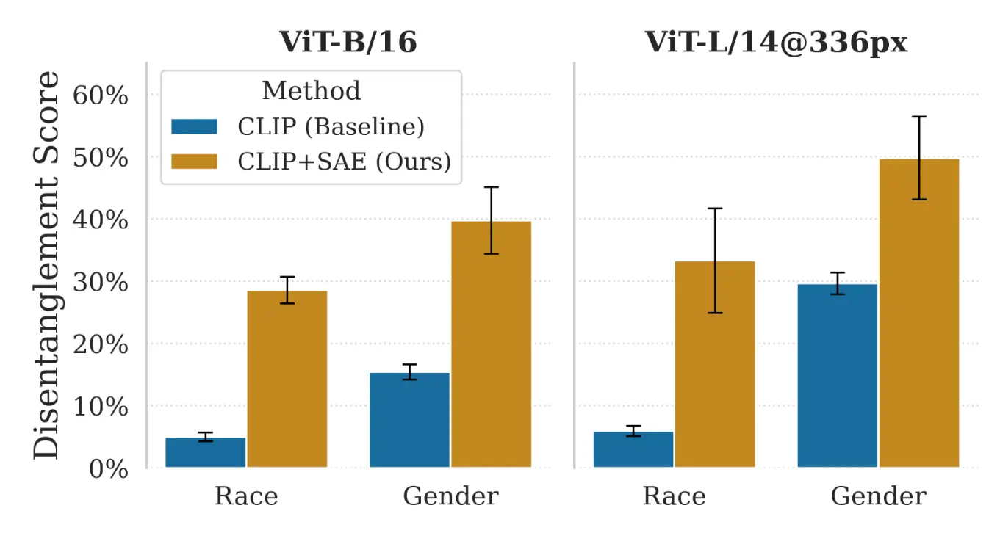
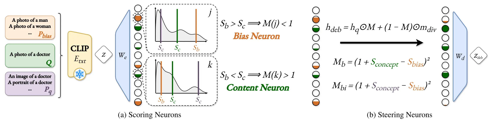
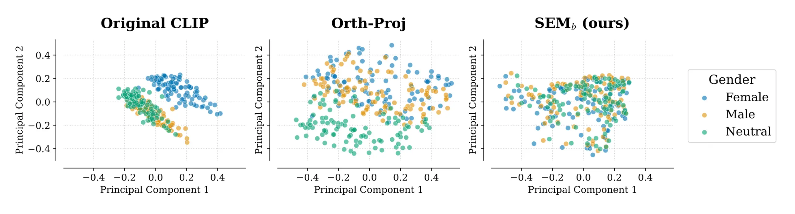
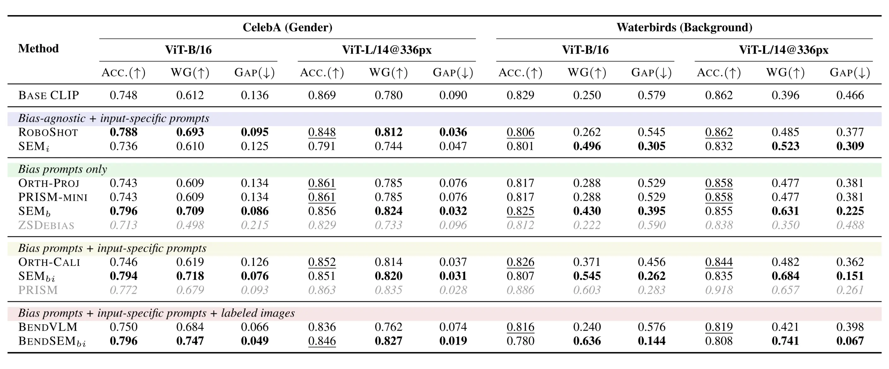
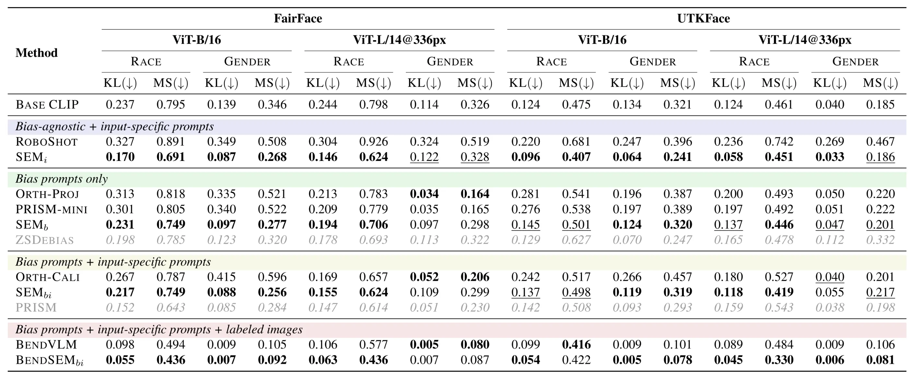

SEM: Sparse Embedding Modulation for Post-Hoc Debiasing of Vision-Language Models
Key Contributions
- Introduction of SEM, a novel post-hoc, zero-shot debiasing framework that leverages Sparse Autoencoders (SAEs) to perform precise, neuron-level intervention on CLIP text embeddings.
- Three adaptable variants: We propose three distinct variants (SEMi, SEMb, SEMbi) that adapt to different levels of available information without requiring any task-specific fine-tuning.
- Superior Disentanglement: We demonstrate that sparse latent representations significantly improve feature disentanglement compared to dense CLIP embeddings, enabling non-linear interventions.
- Significant Fairness Gains: SEM achieves substantial improvements in worst-group accuracy, effectively resolving the fairness-performance trade-off where prior linear projection methods fall short.
- Highly Modular: We show that our feature-level intervention is complementary to existing debiasing methods (like BendVLM), establishing new state-of-the-art results when combined.
Abstract
Models that bridge vision and language, such as CLIP, are key components of multimodal AI, yet their large-scale, uncurated training data introduce severe social and spurious biases. Existing post-hoc debiasing methods often operate directly in the dense CLIP embedding space, where bias and task-relevant information are highly entangled. This entanglement limits their ability to remove bias without degrading semantic fidelity.
In this work, we propose Sparse Embedding Modulation (SEM), a post-hoc, zero-shot debiasing framework that operates in a Sparse Autoencoder (SAE) latent space. By decomposing CLIP text embeddings into disentangled features, SEM identifies and modulates bias-relevant neurons while preserving query-relevant ones.
This enables more precise, non-linear interventions. Across four benchmark datasets and two CLIP backbones, SEM achieves substantial fairness gains in retrieval and zero-shot classification. Our results demonstrate that sparse latent representations provide an effective foundation for post-hoc debiasing of vision-language models.
Motivation: Quantifying Disentanglement

A primary challenge in post-hoc debiasing is that semantic concepts (e.g., 'profession') and bias attributes (e.g., 'race' or 'gender') are highly entangled in the original dense CLIP embedding space.
To quantify this, we introduced a Disentanglement Score using a sequential probing setup. As shown in the plot above, standard CLIP embeddings (blue) exhibit severe entanglement. By projecting these embeddings into a Sparse Autoencoder (SAE) latent space (orange), we increase feature disentanglement by 1.7-2.6x for Gender and 5.6-5.7x for the complex, multi-class Race attribute. This proves that SAEs effectively separate bias from task-relevant semantics, providing the ideal foundation for targeted interventions.
Method

SEM operates in two main stages to precisely target and remove bias:
- Scoring Neurons: The CLIP embedding is projected into the SAE latent space. We then score neurons based on their content relevance (using augmented paraphrases) and bias sensitivity (using predefined bias prompts).
- Steering via Modulation: These scores are combined into a modulation coefficient M. This coefficient attenuates bias-specific neurons while preserving or boosting content-relevant neurons, allowing us to reconstruct a precisely debiased embedding.
Three Adaptable Variants
To maximize flexibility, SEM adapts based on the available information at inference time:- SEMi (Bias-Agnostic): When specific bias prompts are unavailable, this variant uses LLM-generated paraphrases to establish a robust estimation of content-relevant neurons, and safely attenuates all other (likely spurious) features.
- SEMb (Bias-Aware): Uses a predefined list of bias prompts (e.g., "A photo of a man", "A photo of a woman") to perform highly structured, bias-specific neuron identification and targeted modulation.
- SEMbi (Full): The most comprehensive variant. It seamlessly combines the robust content estimation of SEMi with the targeted bias sensitivity scoring of SEMb to achieve the most balanced, high-performance debiasing.
Visualizing Disentanglement

We present a 2D PCA of embeddings for 100 professions. The original CLIP space (left) is highly biased, with "neutral" and "male" professions overlapping incorrectly. Standard orthogonal projection (middle) disrupts the data's underlying structure and fails to merge neutral concepts. In contrast, our SEM framework (right) successfully merges 'male', 'female', and 'neutral' clusters into a cohesive distribution with a consistent structure, proving superior content preservation.
Quantitative Results
Across four challenging benchmarks (FairFace, UTKFace, CelebA, and Waterbirds), our SEM variants deliver consistent state-of-the-art fairness improvements.
Zero-Shot Classification

SEM significantly improves robustness against strong spurious correlations. On the Waterbirds dataset, prior methods like orthogonal projection offer only marginal gains, whereas SEMbi achieves a massive 28-point gain in Worst-Group (WG) accuracy.
Cross-Modal Retrieval

In retrieval tasks, our bias-agnostic SEMi variant is state-of-the-art in its category, significantly outperforming RoboShot, which often degrades fairness. SEM achieves this without sacrificing semantic accuracy, demonstrating that targeted sparse modulation effectively resolves the fairness-precision trade-off.
BibTeX
@inproceedings{guimardbartsch2026sem,
title={{SEM: Sparse Embedding Modulation for Post-Hoc Debiasing of Vision-Language Models}},
author={Guimard, Quentin and Bartsch, Federico and Caldarella, Simone and Aljundi, Rahaf and Ricci, Elisa and Mancini, Massimiliano},
booktitle={Findings of the IEEE/CVF Conference on Computer Vision and Pattern Recognition (CVPR)},
year={2026}
}